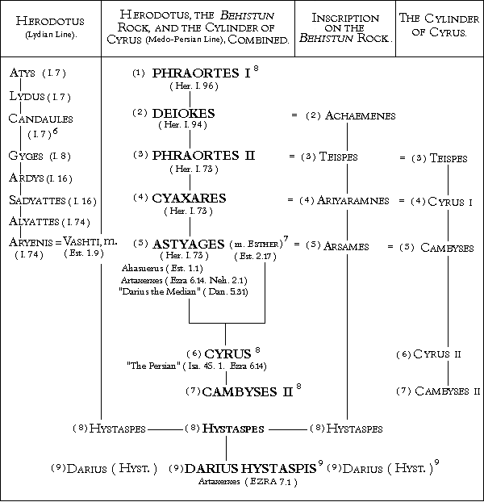

|
THE PERSIAN KINGS.
In 1846 Major (afterward Sir Henry) Rawlinson published a complete translation of the trilingual Persian text on the isolated rock of Behistun, (or more correctly Bahistun) which rises 1,700 feet out of the Plain, on the high road from Babylonia to the East; in which DARIUS HYSTASPIS gives his own genealogy. This famous rock (of which a view is given on page 82 by the kind permission
of Messrs. Longmans & Co., the publishers of Canon Rawlinson's Memoir
of Major-General Sir H.C. Rawlinson) derives its name from the village
of Bisitun or Bisutun, near its foot. It is on the
high road from Baghdad to Teheran, about sixty-five miles from Hamadan
(on the site of the ancient Ecbatana).
On this rock, on a prepared surface about 500 feet from the level of
the plain, and most difficult of access, DARIUS HYSTASPIS caused to be
carved the principal events of his reign; and he commences with an account
of his genealogy. § I. "I am Darius, the great king, the king of kings, the king of Persia, the king of the provinces, the son of Hystaspes, the grandson of Arsames the Achaemenian.
AHASUERUS means "the Mighty", and "is the name, or rather the title, of four Median and Persian monarchs" (Kitto, Bib. Encycl. I, p. 91). "In every case the identification of the person named is a matter of controversy". See The Encycl. Brit., 11th (Cambridge) edn., vol. i, p. 429. ARTAXERXES means Great King, or Kingdom, and is synonymous with Artachshast (Arta = Great, and Kshatza = Kingdom, preserved in the modern "Shah"). According to Prideaux he is identified with the Ahasuerus of Est. 1:1 (vol. i, p. 306). DARIUS means the Restrainer (Her. VI. 98); or, according to Professor
Sayce, the Maintainer. DARIUS "appears to be originally an
appellative meaning 'king', 'ruler'", (Herbelot, Biblioth. Orient.,
Article 'Dara'); Herodotus (VI. 98) renders it Erxeies = Coercer. "It was assumed as his throne-name by Ochus ( = Darius Nothus), son and
successor of Artaxerxes Longimanus (Ctesias, de Reb. Pers., 48,
57, Muller)". See Kitto, Bib. Cycl., vol. i, p. 625.
XERXES, in his inscription at Persepolis, actually calls himself "DARIUS";
one paragraph begi
1000
nning "XERXES the great king," and the next beginning
"DARIUS the king."
This is why DARIUS HYSTASPIS is thus called, to denote him as DARIUS
the son of HYSTASPES; and to distinguish him from "Darius the Mede", who
was ASTYGES his grandfather.
The ACHAEMENES of DARIUS, identified with DEIOKES of Herodotus (I. 96), was the real founder of the Achaemenian dynasty of which Darius speaks, although his father (PHRAORTES I) was the first of the line. Herodotus describes him (DEIOKES) as a man "famous for wisdom", of great ambition, "aiming at the aggrandisement of the Medes and his own absolute power" (I. 96). PHRAORTES I. would therefore be the first of the eight kings
before DARIUS HYSTASPIS, who speaks of himself as the ninth. See translation given above. As the grandfather of DARIUS HYSTASPIS, he is (according to the Behistun Inscription) to be identified with the ASTYAGES of Herotodus. At the close of the Lydio-Median War "Syannesis the Cilician and Labynetus (or Nabonnedus) the Babylonian (identified by Prideaux, vol. i, p. 82 note, and pp. 135, 136, 19th edn., with Nebuchadnezzar) persuaded ALYATTES to give his daughter ARYENIS in marriage to ASTYAGES, son of KYAXARES" (Her. 1. 74). Of this marriage came HYSTASPES and DARIUS his son.
Here wa have the statement of Cyrus that his father was known as CAMBYSES,
his grandfather as CYRUS, and his great-grandfather under the name (or
title), common to the Behistun Inscription and the Cylinder alike, of TEISPES.
Moreover, if the TEISPES of the Behistun Inscription and the
one of the Cylinder of Cyrus are to be identified with the PHRAORTES (II)
of Herodotus (I. 73), then the grandson of this PHRAORTES (II) must be
ASTYAGES. Consequently we have, under these three names, titles, or appellatives, from Greek, Median, and Persian sources, three persons, called by Herodotus ASTYAGES, by Daruis ARSAMES, and by Cyrus CAMBYSES (*5), who are in reality one and the same. But, if the father of CYRUS was CAMBYSES, by Esther (see the Table of the Genealogy, below), then it follows that not only does CAMBYSES = ARSAMES = ASTYAGES, but = also the AHASUERUS of the book of Esther (Prideaux i, p. 306). Therefore in the presence of all these identifications from independent sources and authorities, we have :-- We now give the Genealogy, according to the Inscription of DARIUS HYSTASPIS on the Behistun rock, referred to above. The names in large capitals are the Greek names given by HERODOTUS. Those in small capitals are the corresponding Persian names as given by DARIUS HYSTASPIS on the Behistun rock, and by CYRUS on his Cylinder; while the names in ordinary small type are the appellatives.ASTYAGES, the AHASUERUS of Est. 1:1, &c. ACCORDING TO  THE ROCK OF BEHISTUN, IN PERSIA, SHOWING THE INSCRIPTION OF DARIUS HYSTASPIS (see pages 79-81). (By the kind permission of Messrs. Longmans & Co.) Notes : (*1) For full particulars see the handsome volume published by the Trustees of the British Museum, The Sculptures and Inscription of Darius the Great on the Rock of Behistun, in Persia. London, 1907. (Price 21S.) (*2) We have indicated this enumeration by placing the figures against the names on p. 81. (*3) The "two lines" are the Lydian and the Medo-Persian, as shown in the Table on p. 81. (*4) "Dareios the son of Hystaspes, who traces his descent through Arsames and Ariaramnes to Teispes the son of Akhaemenes probably refers to the same Teispes" (Sayce, Ancient Empires of the East, p. 243). (*5) "The names Kyros and Kambyses seem to be of Elamite derivation. Strabo, indeed, says that Kyros was originally called Agradates, and took the name of Kurus or Kyros from the river that flows past Pasargadoe" (Sayce, id. p. 243). Cyrus and Cambyses both seem to be territorial titles rather than names. (*6) Herodotus says the ancestors of Candaules reigned for twenty-two generations, covering a period of 505 years (I. 7). (*7) This marriage resulted in the birth of Cyrus, in fulfillment of Isa. 44:25-45:4. And the part taken by Esther and Mordecai in his training, explains all that we read of Cyrus in Ezra and Nehemiah. (*8) Darius, in giving his own direct line, omits the names of Phaortes I, Cyrus, and Cambyses II, but he includes them in the numbering of his eight predecessors. There was a still later "Cyrus" (the Cyrus of Xenophon). See Her. VII. 11. (*9) When Darius (Hyst.) says "in two lines we have been kings", he must refer to the Lydian and Medo-Persian lines.
|